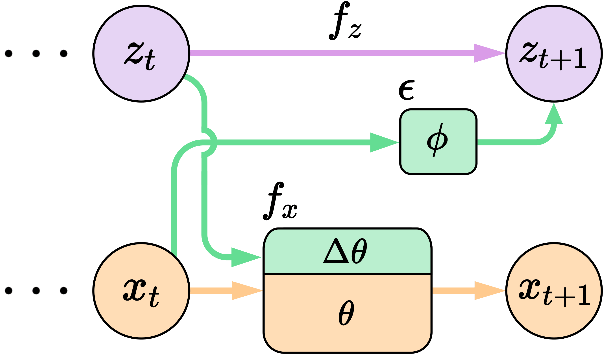
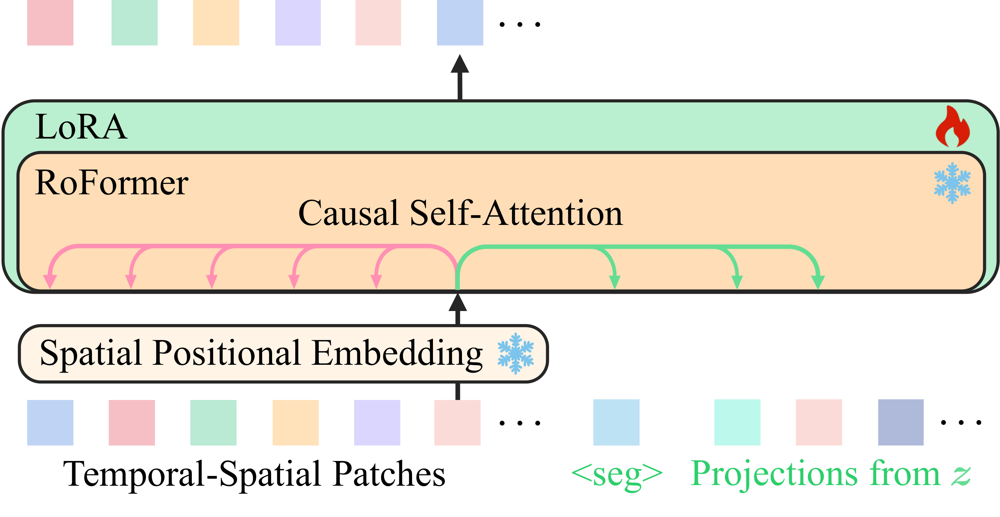
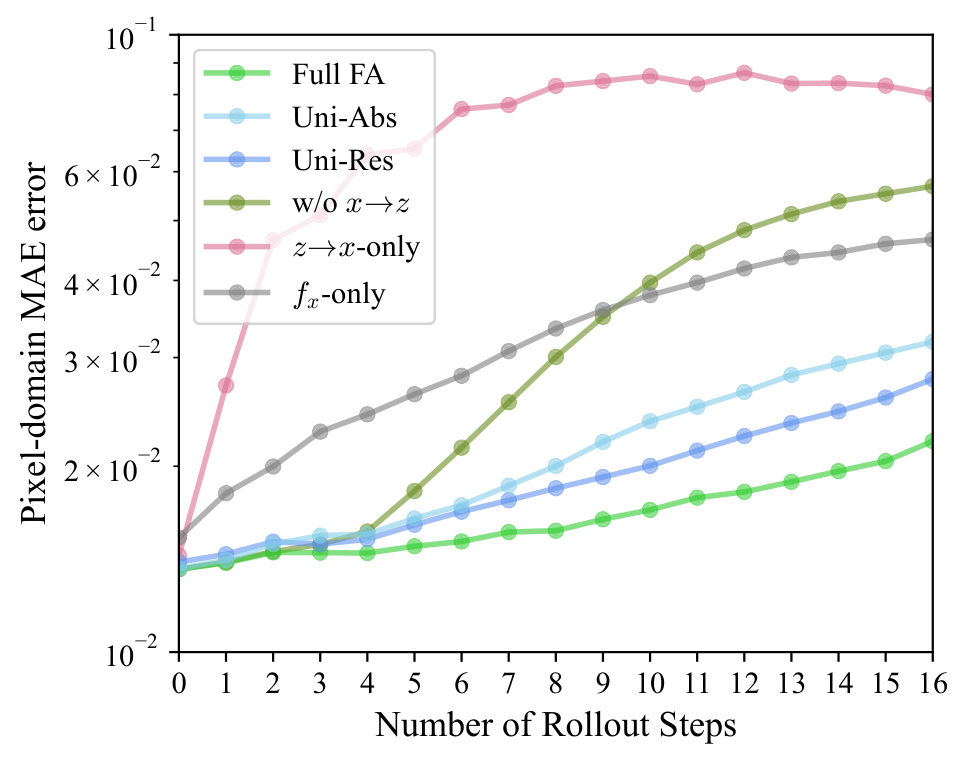
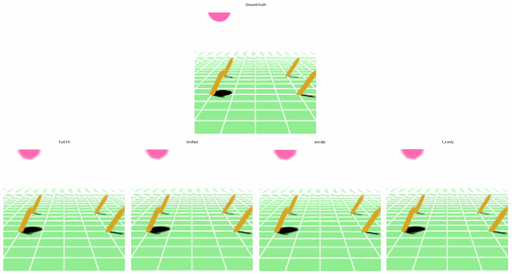
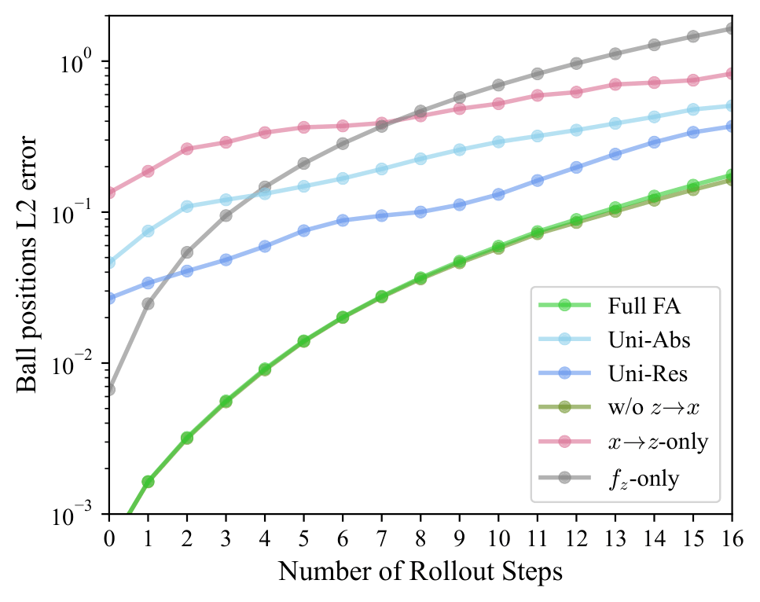
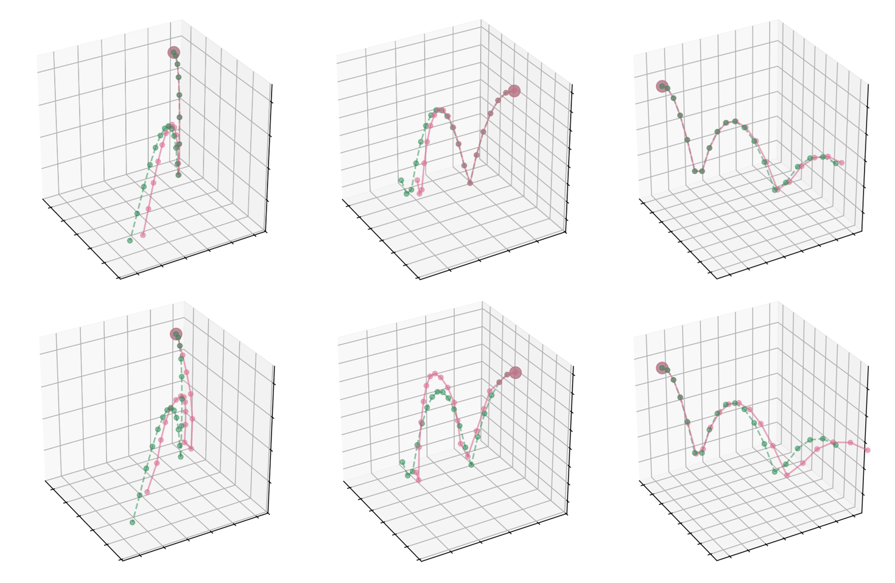
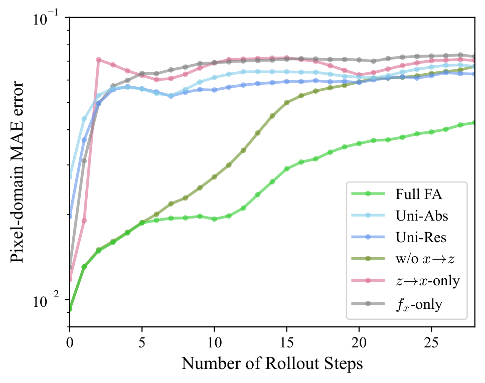
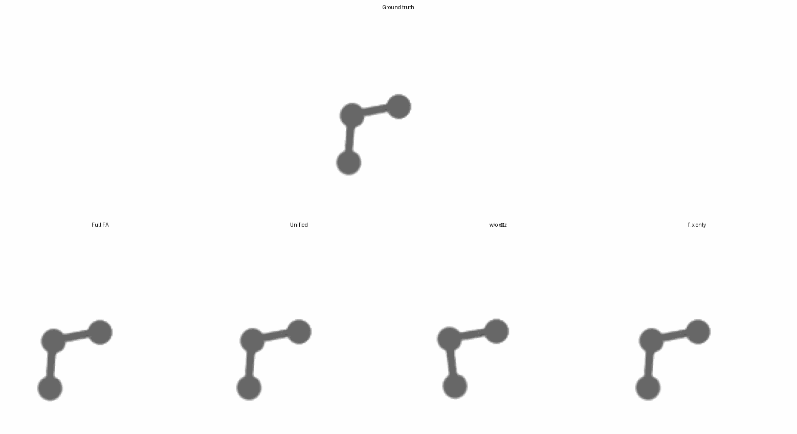
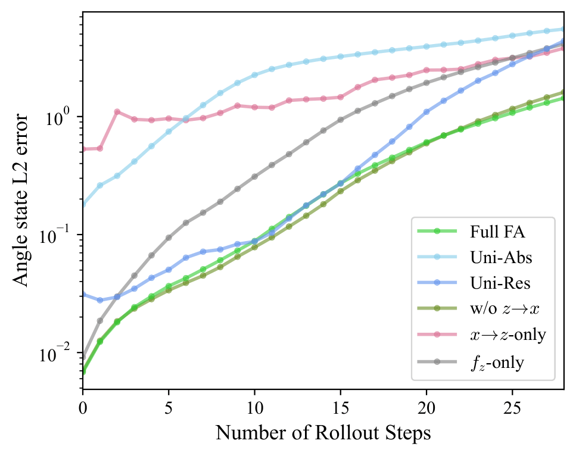
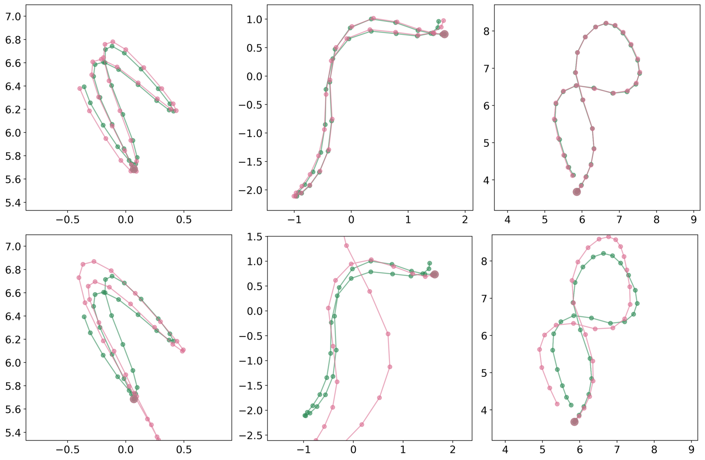

Bridging Sensibility and Rationality: Function Alignment across Heterogeneous Dynamics
Anonymous Authors
Human modeling of complex processes often involves multiple representations that capture different aspects of the same underlying reality. A common strategy is to collapse such representations into a single unified dynamics model, but this can force predictors with different information, inductive biases, and residual errors to share one predictive mechanism. We study function alignment as an alternative organization principle: native autoregressive dynamics are preserved for each representation, while learned directional adapters allow the predictive functions to exchange corrective information during rollout. We provide a theoretical perspective on the potential benefits of function alignment, and provide an instantiation for time-aligned perceptual--analytic representations. Experiments on two physical prediction tasks, covering missing latent information and approximate analytic dynamics, show that function alignment improves long-horizon unconditional rollout in both perceptual and analytic domains over unified-dynamics baselines. Together, these results support function alignment as a practical alternative to unified modeling for stable sequential prediction.
Methodology
Function alignment couples a perceptual dynamics model and an analytic dynamics model without flattening them into one shared state transition. Analytic history conditions the perceptual rollout, while perceptual evidence supplies a corrective signal back into the analytic transition.
For the broader conceptual framing behind function alignment, see the position paper Function Alignment: A New Theory of Mind and Intelligence, Part I: Foundations.
| Function Alignment | Analytic-to-Perceptual Adaptation |
|---|---|
 Function alignment introduces analytic-to-perceptual conditioning and perceptual-to-analytic corrective updates while preserving the base predictive functions. |
 Projected analytic tokens are added as causal context and optimized with LoRA rather than rewriting the pretrained perceptual dynamics wholesale. |
Function alignment is a plug-and-play mechanism: it preserves the original dynamics and adds alignment modules around them. In general, it can be used both for co-generation and for conditional generation, but this page focuses only on co-generation results.
Experiment 1: Wind-Affected Bouncing Ball
Dataset Setting
| Description | Dataset Demo |
|---|---|
| A ball moves in 3D under gravity, collisions, and a latent wind field. The analytic state keeps only position and velocity, so the analytic dynamics miss the wind information visible in the perceptual stream. Here, perceptual dynamics are a VideoGPT that captures visual wind cues, while analytic dynamics are a compact rule-based kinematic model. We test if Function Alignment can combine their advantages to achieve accurate long-horizon co-generation. |
Solid ball: ground-truth trajectory; Dimmed ball: analytic kinematic rollout without wind effects (only for visualization). |
x Domain: Perceptual Prediction
| Quantitative | Qualitative |
|---|---|
 Rollout error in the perceptual domain under co-generation. |
 Top row: Ground truth. Bottom row from left to right: Full FA, Unified, w/o x→z, and f_x only. The pink square indicates the predicted frames based on 3 given starting frames. |
z Domain: Analytic Prediction
| Quantitative | Qualitative |
|---|---|
 Rollout error in the analytic state space under co-generation. |
 Predicted trajectories in 3D position space. Top: Full FA (pink) vs. ground truth (green). Bottom: unified dynamics (pink) vs. ground truth (green). Larger point: shared initial condition. |
Experiment 2: Double Pendulum
Dataset Setting
| Description | Dataset Demo |
|---|---|
| The double pendulum environment pairs rendered video frames with analytic states containing joint angles and angular velocities. The analytic dynamics use Euler integration, so the state model is compact and physically meaningful but numerically approximate in a chaotic regime. Here, perceptual dynamics are a VideoGPT that models directly the visual observations, while analytic dynamics are still a compact rule-based model. |
Solid pendulum: ground-truth motion; dimmed pendulum: Euler-integrated analytic rollout (only for visualization). |
x Domain: Perceptual Prediction
| Quantitative | Qualitative |
|---|---|
 Rollout error in the perceptual domain under co-generation. |
 Top row: Ground truth. Bottom row from left to right: Full FA, Unified, w/o x→z, and f_x only. The pink square indicates the predicted frames based on 1 given starting frame. |
z Domain: Analytic Prediction
| Quantitative | Qualitative |
|---|---|
 Rollout error in the analytic state space under co-generation. |
 Predicted trajectories in joint-angle space. Top: Full FA (pink) vs. ground truth (green). Bottom: unified dynamics (pink) vs. ground truth (green). Larger point: shared initial condition. |
Citation
@misc{anonymous2026bridging,
title = {Bridging Sensibility and Rationality: Function Alignment across Heterogeneous Dynamics},
author = {Anonymous Authors},
year = {2026}
}